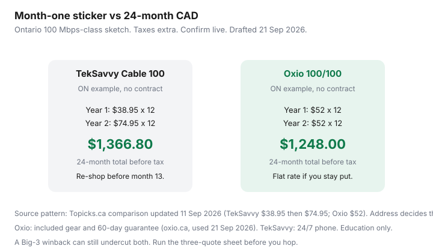

Internet · Canada
TekSavvy vs Oxio in 2026: Promo Credits, Flat Rates, and Who Actually Saves You Money
TekSavvy and Oxio are not “better internet.” They are different retail contracts on someone else’s last mile. Shoppers who grab the lowest month-one tile get a TekSavvy credit that expires — or they overpay Oxio’s flat rate without running 24 months. The 2026 question is not who is virtuous. It is whose price path, coverage, support, and modem rules fit the address.
Run this beside the three-quote method and a winback. Québec cable plant has a third fork: Fizz vs Videotron.
Disclosure: No ISP partnership. Mesh Wi-Fi systems and ethernet cables are offer types that can help when the ISP modem’s radio is weak; Saving Optimizer may later add partner links. We do not currently claim gear or ISP commissions. Prices below are labelled public comparisons — confirm on teksavvy.com and oxio.ca at your civic address. Education only.
Key takeaways
- Both are wholesale/reseller models. Oxio: Cogeco (ON), Videotron (QC), Rogers (BC/AB/MB/SK) in 2026 write-ups. TekSavvy: DSL, cable, and fibre across all 10 provinces where plant allows.
- Oxio’s pitch (oxio.ca, used 21 Sep 2026): fixed price, no term, equipment included, 60-day guarantee. Chat/SMS care, not 24/7 phone.
- TekSavvy mixes temporary bill credits and some true flat rates. Ontario Cable 100 was compared at $38.95 then $74.95; Cable 1 Gbps $71.95 then $120.95 (Topicks.ca, 11 Sep 2026).
- On that 100 Mbps Ontario sketch, Oxio at $52 flat is about $119 cheaper over 24 months if you never re-shop TekSavvy — and more expensive in year one.
- A documented Big-3 winback or Fizz (Québec) can still beat both. Re-shop the credit cliff.
Wholesale model 101: same last-mile cable or fibre, different retail terms
Independents buy access to Rogers, Cogeco, Videotron, Bell, Telus, Shaw-legacy, or Eastlink facilities. Your node, your rain fade, your 8 p.m. congestion — those belong to the plant owner. What you buy from TekSavvy or Oxio is the bill, the support queue, the modem policy, and whether the price is a credit or a promise.
That is why an address check is mandatory. Oxio not serving Atlantic Canada is not a moral failing; TekSavvy’s fibre 1.5 Gbps tile on their homepage (used 21 Sep 2026) is “select areas.” If only one reseller qualifies, the comparison is incumbent vs that reseller, not a national vs.
TekSavvy pricing mix: temporary credits vs ongoing flat rates
TekSavvy’s own marketing (21 Sep 2026) pushes fibre with “12 months of bill credits on select fibre packages” and speed buckets from ~30 Mbps cable-class up to 1.5 Gbps / 940 Mbps fibre where available. The important retail split:
- Credit plans — a lower first-12-months price that reverts. Ontario examples from the 11 Sep 2026 Topicks comparison: Cable 30 on a 12-month term $32.95 then $65.95; Cable 100 no-contract $38.95 then $74.95; Cable 1 Gbps $71.95 then $120.95; Cable 500 $75.95 then $110.95; 1.5 Gbps fibre $89.95 then $119.95 in listed provinces.
- Already-flat plans — some DSL and Québec cable tiers are sold at one ongoing rate with no promotional dip. Those compare cleanly to Oxio. Confirm on the address-qualified cart, not a blog table.
TekSavvy also sells 12- and 24-month terms on a minority of plans (including some fibre). A term plus a credit that dies at month 13 is the worst of both if you wanted to leave. Read the cart.
Oxio flat-rate promise, included router, 60-day guarantee
Oxio’s English homepage (used 21 Sep 2026) leads with “Fixed-price internet,” “no term contracts,” “equipment included,” “no sneaky setup fees,” speeds “up to 1 Gbps,” and a 60-day guarantee. Support copy: text or live chat 7 days, 8 a.m.–7 p.m. Their schema description: “no term contracts & no price hikes.” Address “determines the final price.”
Public 2026 plan tables (PlanGenius / Topicks, not Oxio’s own cart) have shown Ontario/Québec examples such as ~$25 for 15/2, ~$52 for 100/100, ~$63 for 120 Mbps in older tables, ~$79–$85 for 500–1000 Mbps on some Cogeco footprints, and western 1.5 Gbps around $95. Older “$55 gigabit on Cogeco / $90 on Rogers” tiles also circulated. Only the address tool is canonical.
Activation fees after 12 June 2026 are generally banned anyway (CRTC 2026-43). Oxio’s “no setup fees” is now table stakes industry-wide unless a technician visits.
Coverage map reality: provinces and address eligibility
| Oxio | TekSavvy | |
|---|---|---|
| Provinces | Six in 2026 write-ups: ON, QC, BC, AB, MB, SK | All 10 provinces where access permits |
| Plant | Cogeco ON; Videotron QC; Rogers west | Cable (Rogers/Cogeco/Shaw/Videotron/Eastlink), DSL (Bell/Telus), fibre pockets |
| Atlantic | Not in those six-province maps | Fibre-tagged plans can be the only listed option in NS/PE |
| Max marketed speed | About 1.5 Gbps cable in the west on comparison pages | Homepage 1.5 Gbps fibre; comparison pages cite up to 3 Gbps fibre in select markets |
Support, self-install, and modem ownership differences
TekSavvy’s cultural offer is still a phone queue and a long-running independent brand. Oxio’s cultural offer is not calling anyone. If your household includes a person who will not troubleshoot in an app, that is a dollar-equivalent. If you hate hold music, Oxio’s model is the product.
Modems: Oxio includes a combo and comparisons say BYO is not the point. TekSavvy has historically loaned hardware at $0 on selected plans and published approved-modem lists for cable — the right path if you want to own a DOCSIS stick and put your own router behind it. Do not buy a U.S. retail modem until the Canadian approved list names the exact model and plant (Rogers vs Videotron firmware is not a trivia question).
A mesh node or a short ethernet run is the usual fix when the included radio dies in a brick walk-up. That spend is independent of which reseller prints the bill.
24-month total cost worksheet (not just month-one sticker)

Worksheet rows: promo $/mo × months; regular $/mo × remaining months; credits; hardware; shipping; tax. On the labelled Ontario 100 Mbps example, staying put the whole time favours Oxio’s $1,248 vs TekSavvy’s $1,366.80. If you treat TekSavvy like Rogers and re-shop or winback yourself at month 11, year-two $74.95 is optional. Gigabit sketches can reverse the winner because TekSavvy’s first-year $71.95 is far below Oxio’s ~$85 Ontario 1000/200 comparison row — until month 13’s $120.95 lands.
When a Big-3 winback still beats both
Use the independent 24-month number as BATNA on the Rogers/Bell/Telus/Videotron call. If they email $45-class cable with a $200 credit and a tolerable ETF, the reseller comparison was still the work that produced the save. If they offer $10 off list, take Oxio or TekSavvy (or Fizz). Fibre uploads, Ignite/Helix TV you actually watch, or a reseller that cannot qualify the address are the honest reasons to stay incumbent.
Sources & date stamps
- Oxio.ca/en — fixed-price, no-term, equipment included, 60-day guarantee, chat hours 8 a.m.–7 p.m. (used 21 Sep 2026).
- TekSavvy.com — fibre credits on select packages; speed buckets including 1.5 Gbps / 940 Mbps fibre where available (used 21 Sep 2026).
- Topicks.ca, “Oxio vs TekSavvy Internet plans in Canada (2026),” updated 11 Sep 2026 — labelled ON pricing, coverage, support contrast. Confirm live.
- PlanGenius Oxio pages — additional 2026 plan tables (Cogeco vs Rogers gigabit tiles). Address tool overrides blogs.
- CRTC 2026-43 — activation-fee baseline as of 12 Jun 2026.
Frequently asked questions
Is Oxio always cheaper over two years?
Not at month one. Ontario 100 Mbps-class public comparisons dated 11 Sep 2026 showed TekSavvy $38.95 then $74.95 versus Oxio $52 flat ($1,366.80 vs $1,248 over 24 months before tax). If you re-shop TekSavvy at month 12, the independent credit can still win. Verify live at the address.
Does Oxio use the same cables as Rogers or Videotron?
Often yes. 2026 coverage write-ups put Oxio on Cogeco in Ontario, Videotron in Québec, and Rogers plant in B.C., Alberta, Manitoba, and Saskatchewan. You are shopping retail terms, not a second network.
Can I bring my own modem to Oxio?
Oxio’s public pitch is equipment included and a supplied combo. Comparisons in 2026 say customers use Oxio gear. TekSavvy more often documents hardware loans and BYO on an approved list. Confirm at signup.
Who has phone support?
TekSavvy advertises 24/7 phone plus chat and a forum. Oxio is digital-first (chat/SMS, 8 a.m.–7 p.m. in their own copy). If you need a voice on holidays, that is a real column on the sheet.
When does a Big-3 winback still win?
When the written 24-month Rogers/Bell/Telus/Videotron number undercuts both independents, or you need fibre uploads / a TV bundle the resellers do not match at that address.